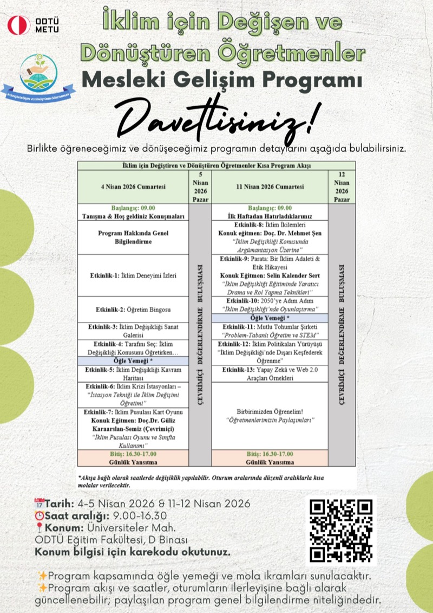
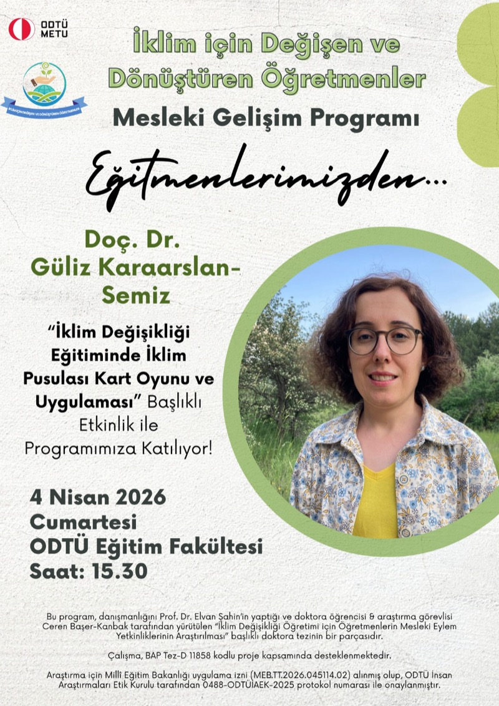
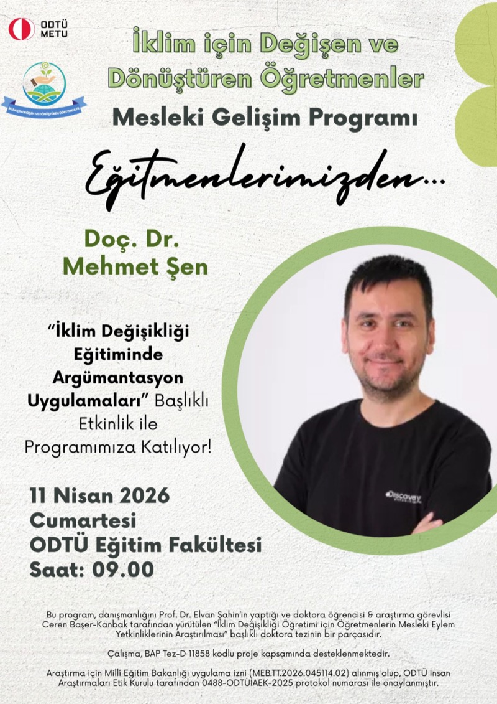
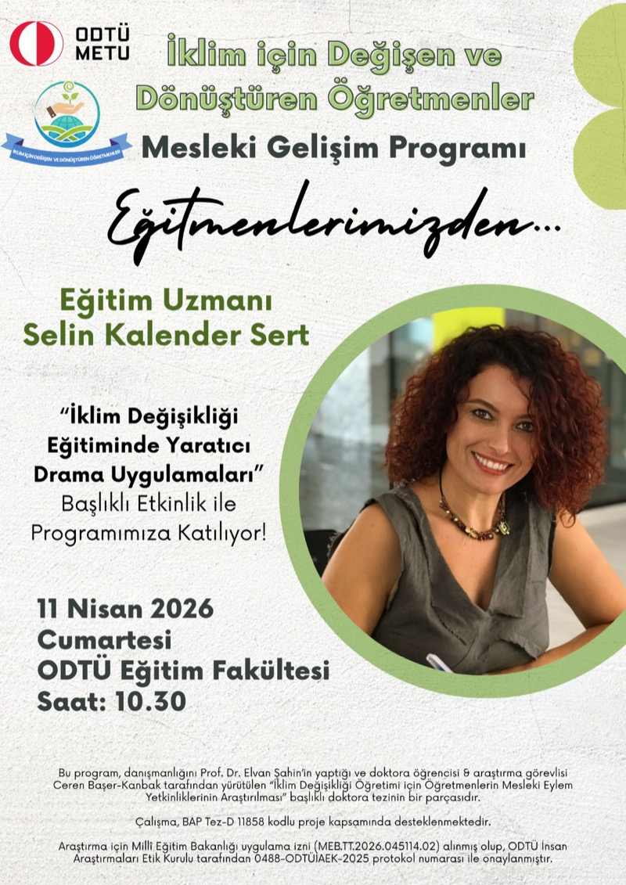
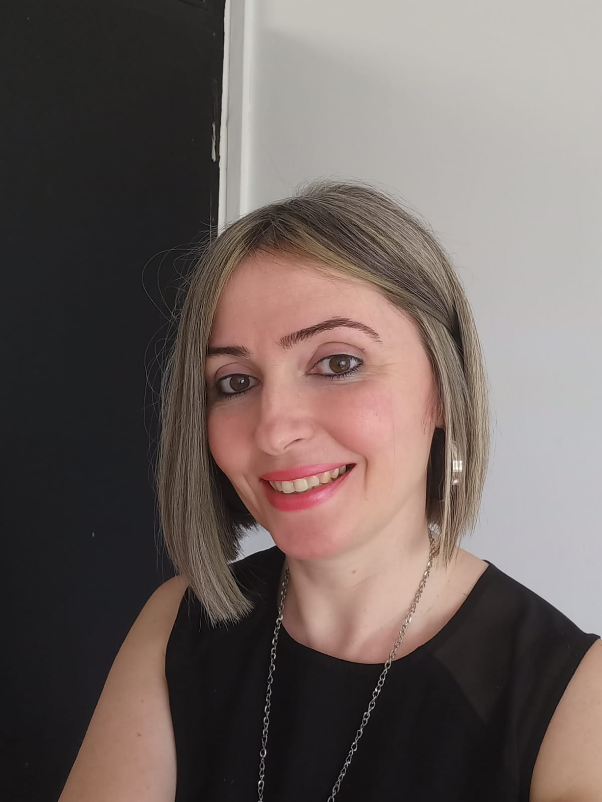
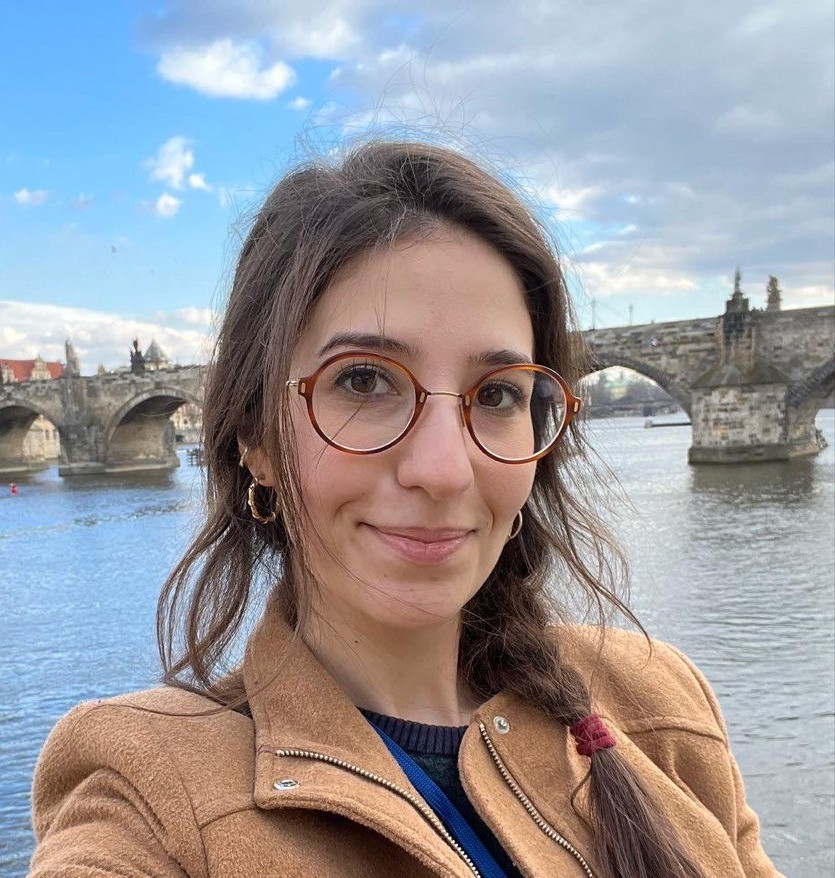
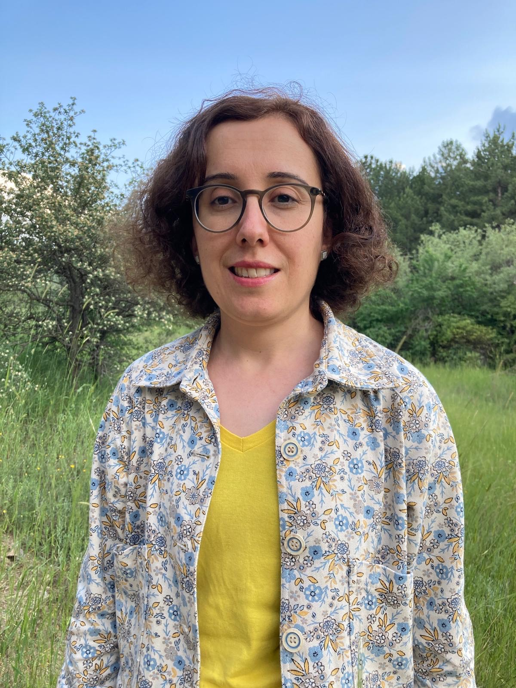
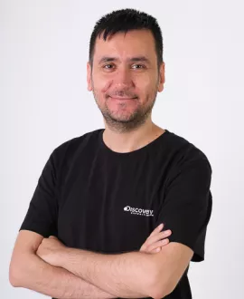
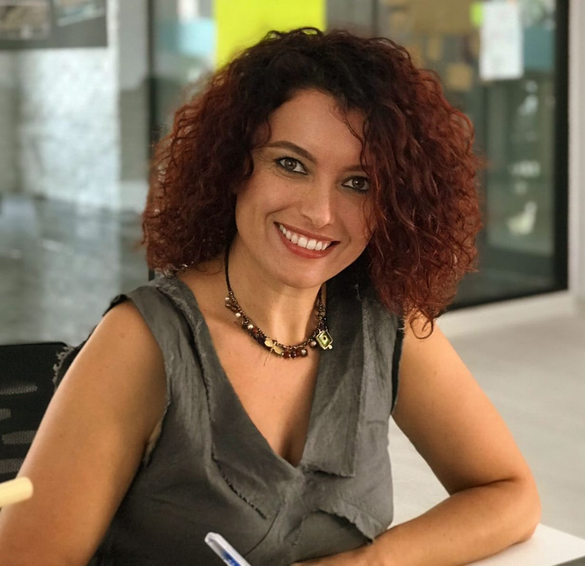

Öğretmen El Kitapçığı · Önizleme
TürkçeBu PDF, öğretmen el kitapçığının önizleme sürümüdür. Program kapsamında geliştirilen içerik ve etkinliklerin seçilmiş bir derlemesini sunmaktadır.
Hizmet içi öğretmenlerin iklim değişikliğini öğretme konusundaki yetkinliklerini güçlendirmek amacıyla hazırlanmış iş birliğine dayalı bir mesleki gelişim programıdır.
Bu program, öğretmenlerin iklim değişikliği eğitimindeki yetkinliklerini artırmayı hedefleyen kapsamlı bir mesleki gelişim ve etkileşim platformudur. Katılımcıların öğretim süreçlerinde aktif rol aldığı, yenilikçi ve kapsayıcı öğrenme ortamları sunan yapılandırılmış bir eğitim modelini içermektedir.
Ankara ilinde aktif görev yapan ortaokul öğretmenleriyle iş birliği içinde tasarlanan eğitim modeli, öğretmenlerin sınıf içindeki gerçek ihtiyaçları göz önünde bulundurularak geliştirilmiş ve uygulanmıştır.
Temel amaç, öğretmenleri salt iklim değişikliği bilgilerini aktarmanın ötesinde, bu konuyu dönüştürücü ve öğrenci merkezli bir stratejiyle ele almalarını sağlayacak pedagojik gelişimleriyle donatmaktır.
Projenin temel amacı, öğretmenlerin karmaşık ve multidisipliner bir yapıya sahip iklim değişikliği konusunu öğretirken karşılaştıkları kavramsal, pedagojik ve sistemsel zorlukların üstesinden gelmelerini desteklemektir.
Bu amaç doğrultusunda, sınıf içi uygulamalarda salt bilgi aktarımına dayalı geleneksel yöntemler yerine, öğrenciyi aktif kılan ve sorgulamaya teşvik eden öğrenci merkezli, dönüştürücü öğretim stratejilerinin güçlendirilmesi hedeflenmektedir. Eğitimin yalnızca farkındalık yaratmanın ötesine geçerek davranışsal bir değişime ilham vermesi, projenin temel pedagojik yaklaşımını oluşturmaktadır.
Katılımcıların iklim okuryazarlığını desteklemek üzere tasarlanmış aktif ve etkileşimli öğrenme ortamları aracılığıyla, öğretmenlerin alan bilgisi, pedagojik yetkinlikleri ve öğretim sürecine dair motivasyonları ile isteklilikleri artırılmaktadır.




Araştırma sürecinde üretilen materyaller belgelenmiş ve erişime hazır hâle getirilmiştir.
Bu PDF, öğretmen el kitapçığının önizleme sürümüdür. Program kapsamında geliştirilen içerik ve etkinliklerin seçilmiş bir derlemesini sunmaktadır.
Program sürecinde üretilen içeriklerin bütüncül biçimde derleneceği öğretmen el kitabı; oturum akışı, uygulama notları ve seçili çıktılar için akademik bir özet sunacaktır.
Öğretmenlerimizin sınıf içi uygulamalarından örnek paylaşımlar.
Akademik paylaşımlar.

Proje Yürütücüsü
ODTÜ Matematik ve Fen Bilimleri Eğitimi Bölümü
Orta Doğu Teknik Üniversitesi Matematik ve Fen Bilimleri Eğitimi Bölümü öğretim üyesidir. Fen eğitimi alanında doktora (2008) ve yüksek lisans (2005), kimya eğitimi alanında lisans (2002) derecelerine sahiptir. Başlıca araştırma alanları sürdürülebilir kalkınma için eğitim ve çevre okuryazarlığıdır.
Sürdürülebilir Kalkınma · Çevre Okuryazarlığı
Doktora Öğrencisi · Araştırma Görevlisi
ODTÜ Matematik ve Fen Bilimleri Eğitimi Bölümü
ODTÜ Matematik ve Fen Bilimleri Eğitimi Bölümü'nde araştırma görevlisi ve doktora öğrencisidir. Aynı bölümden lisans (2018) ve yüksek lisans (2021) derecelerine sahiptir. Başlıca araştırma alanları sürdürülebilir kalkınma için eğitim, iklim değişikliği eğitimi ve insan-çevre ilişkisidir.
İklim Değişikliği Eğitimi · İnsan-Çevre İlişkisi
Konuk Eğitmen
Vechta Üniversitesi, Almanya
2016'da ODTÜ Fen Bilimleri Eğitimi'nde Sürdürülebilir Kalkınma için Eğitim kapsamında Sistemsel Düşünce Becerileri konusunda doktorasını tamamladı. İlköğretim seviyesi sürdürülebilir kalkınma için eğitim ve iklim değişikliği eğitimi alanlarında çalışmaktadır.
İklim Pusulası Oyunu
Konuk Eğitmen
TED Üniversitesi · Sınıf Eğitimi ABD
2021'de doktorasını tamamladı. Doktora sürecinde ortaokul öğrencilerinin fen derslerinde argümantasyon sürecine katılımlarını, kullandıkları argümantasyon şemalarını ve argümantasyon eğitiminin bilimsel okuryazarlık düzeyine etkisini gerçek sınıf ortamında araştırdı.
Argümantasyon Pedagojisi
Konuk Eğitmen
İSTEK Okulları · Eğitim Uzmanı
Hacettepe Üniversitesi Fen Bilimleri Öğretmenliği ve Ankara Üniversitesi Yaratıcı Drama Yüksek Lisans mezunudur. Çağdaş Drama Derneği Yaratıcı Drama Eğitmenlik ve Uludağ Üniversitesi Doğa ve Orman Pedagojisi Eğitmenlik Programlarını tamamlamıştır. Öğretmenlerin mesleki gelişimi ve doğa temelli çalışmalarda uzmanlaşmıştır.
Yaratıcı Drama · Doğa Pedagojisiİklim için Değişen ve Dönüştüren Öğretmenler Mesleki Gelişim Programı’ndan derlenen görseller.
İklim için Değişen ve Dönüştüren Öğretmenler, ODTÜ Eğitim Fakültesi Matematik ve Fen Bilimleri Eğitimi Bölümü bünyesinde yürütülen, iklim değişikliği eğitimi odaklı bir mesleki gelişim programıdır.